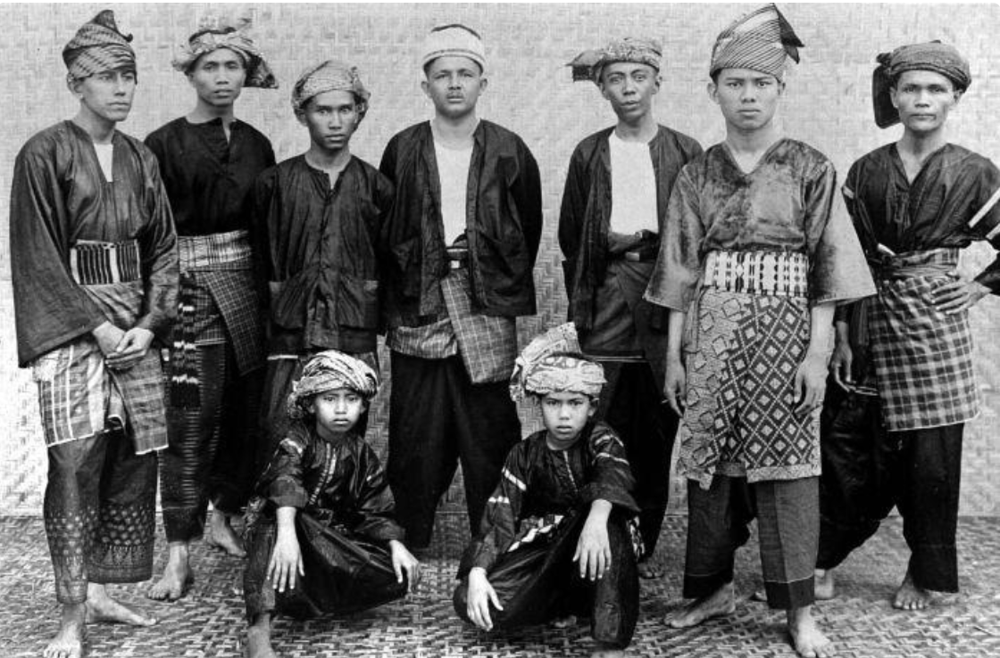

Sejarah Melayu Jambi

Mengenal Suku Melayu Jambi: Asal-Usul, Adat, dan Budaya
Provinsi Jambi tak hanya terkenal dengan keindahan alam dan hasil buminya yang melimpah, tetapi juga dengan warisan budaya Melayu yang begitu kaya. Di sepanjang aliran Sungai Batanghari, berkembang sebuah komunitas masyarakat yang memegang teguh tradisi leluhur: Suku Melayu Jambi. Sebagai penghuni dominan di wilayah dataran rendah Jambi, Suku Melayu Jambi menyimpan sejarah panjang, filosofi hidup yang mendalam, serta ragam tradisi unik. Yuk, kenal lebih dekat dengan asal-usul, adat, dan kebudayaan Suku Melayu Jambi!
1. Asal-Usul dan Sejarah Suku Melayu Jambi
Peradaban Suku Melayu Jambi tidak bisa dilepaskan dari posisi strategis Sungai Batanghari sebagai jalur perdagangan kuno di Asia Tenggara.
Lantas, dari mana nama "Jambi" berasal?
Tahukah Kamu?
Salah satu versi sejarah paling populer menyebutkan bahwa kata Jambi berasal dari kata "jambe" dalam bahasa Jawa/Sunda yang berarti buah pinang. Nama ini berkaitan erat dengan masa pemerintahan Puteri Selaras Pinang Masak sekitar abad ke-15.
Seiring berjalannya waktu, masuknya ajaran Islam membawa perubahan besar dalam struktur sosial dan nilai-nilai budaya masyarakat setempat.
2. Adat Istiadat dan Filosofi Hidup
Masyarakat Melayu Jambi dikenal sangat religius dan menjunjung tinggi norma adat. Nilai-nilai hidup mereka terangkum dalam prinsip utama:
"Bersendikan Kitabullah"
Filosofi hidup ini menegaskan bahwa segala aturan hukum adat dan tata cara bermasyarakat bersumber langsung dari ajaran agama Islam (Al-Qur'an dan Hadis).
Untuk menjaga keharmonisan, masyarakat Jambi dipandu oleh Seloko Adat. Seloko ini berupa ungkapan petatah-petitih atau kiasan yang sarat akan pesan moral, keagamaan, dan sosial. Seloko Adat menjadi pegangan hidup agar masyarakat tetap santun, bijaksana, dan saling menghormati.
3. Sistem Kekerabatan dan Mata Pencaharian
- Sistem Kekerabatan: Suku Melayu Jambi menganut sistem bilateral, yaitu menarik garis keturunan dari pihak ayah maupun ibu secara seimbang.
- Mata Pencaharian: Secara tradisional, mayoritas masyarakat bekerja di bidang pertanian dan perkebunan. Selain menanam padi di ladang (umo), komoditas utama masyarakat Jambi saat ini mencakup perkebunan karet dan kelapa sawit.
4. Kekayaan Seni dan Tradisi Budaya
Kebudayaan Melayu Jambi sangat beragam dan memikat. Berikut adalah beberapa elemen budaya unggulan yang menjadi kebanggaan masyarakat Jambi:
A. Batik Jambi yang Khas
Batik Jambi terkenal dengan perpaduan warna yang berani dan tegas seperti merah, kuning, biru, dan hitam. Pengrajin tradisional memanfaatkan bahan-bahan alami dari tumbuh-tumbuhan untuk proses pewarnaan. Motif-motif ikonik Batik Jambi antara lain:
- * Motif Durian Pecah
- * Motif Kapal Sanggat
- * Motif Angso Duo
- * Motif Riang-Riang
B. Tari dan Lagu Daerah
Seni pertunjukan Jambi kaya akan makna kehangatan dan kebersamaan:
- * Tari Sekapur Sirih: Tarian selamat datang yang disajikan khusus untuk menyambut tamu-tamu kehormatan.
- * Tari Selampit Delapan: Tarian tradisional yang melambangkan pergaulan dan keharmonisan.
- * Lagu Daerah: Lagu-lagu seperti "Injit-Injit Semut" dan "Batang Hari" yang populer hingga tingkat nasional.
C. Upacara dan Ritual Tradisional
- Upacara Kumau: Ritual adat yang dilakukan menjelang musim hujan saat petani bersiap membuka lahan dan menanam padi sebagai ungkapan doa memohon kesuburan dan hasil panen yang melimpah.
- Mandi Shafar: Ritual menyucikan diri dan berdoa bersama untuk memohon perlindungan dari mara bahaya, yang dilaksanakan setiap malam Rabu terakhir di bulan Shafar.
Penutup
Suku Melayu Jambi adalah cermin perpaduan harmonis antara sejarah kuno, nilai keagamaan, dan kelestarian alam. Memahami kebudayaan Jambi memberi kita gambaran betapa kayanya keberagaman yang dimiliki Indonesia. Apakah kamu tertarik untuk berkunjung langsung dan menikmati keindahan budaya Jambi secara langsung?